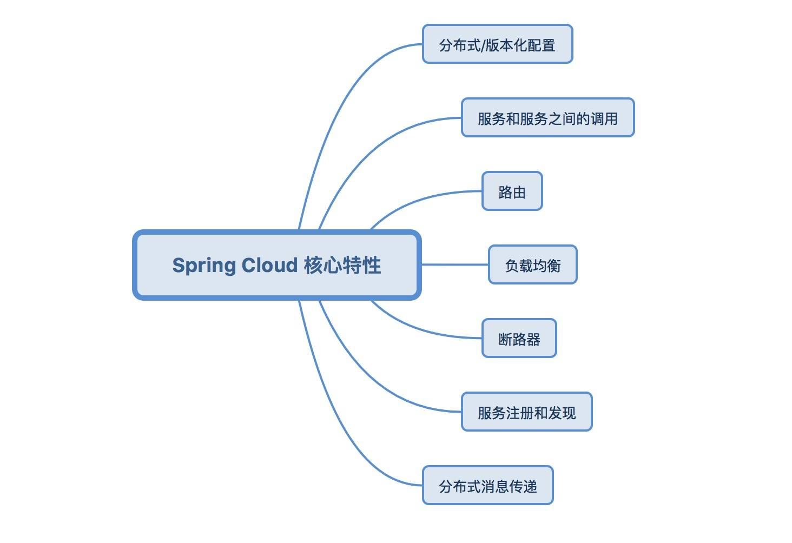
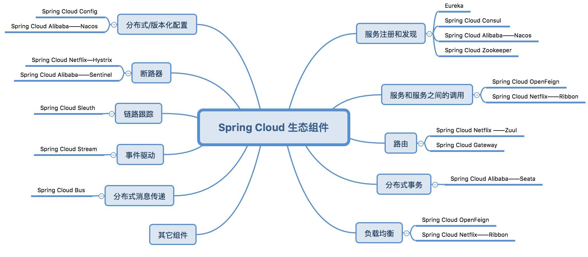

- 00 开篇导读.md.html
- 01 以真实“商场停车”业务切入——需求分析.md.html
- 02 具象业务需求再抽象分解——系统设计.md.html
- 03 第一个 Spring Boot 子服务——会员服务.md.html
- 04 如何维护接口文档供外部调用——在线接口文档管理.md.html
- 05 认识 Spring Cloud 与 Spring Cloud Alibaba 项目.md.html
- 06 服务多不易管理如何破——服务注册与发现.md.html
- 07 如何调用本业务模块外的服务——服务调用.md.html
- 08 服务响应慢或服务不可用怎么办——快速失败与服务降级.md.html
- 09 热更新一样更新服务的参数配置——分布式配置中心.md.html
- 10 如何高效读取计费规则等热数据——分布式缓存.md.html
- 11 多实例下的定时任务如何避免重复执行——分布式定时任务.md.html
- 12 同一套服务如何应对不同终端的需求——服务适配.md.html
- 13 采用消息驱动方式处理扣费通知——集成消息中间件.md.html
- 14 Spring Cloud 与 Dubbo 冲突吗——强强联合.md.html
- 15 破解服务中共性问题的繁琐处理方式——接入 API 网关.md.html
- 16 服务压力大系统响应慢如何破——网关流量控制.md.html
- 17 集成网关后怎么做安全验证——统一鉴权.md.html
- 18 多模块下的接口 API 如何统一管理——聚合 API.md.html
- 19 数据分库后如何确保数据完整性——分布式事务.md.html
- 20 优惠券如何避免超兑——引入分布式锁.md.html
- 21 如何查看各服务的健康状况——系统应用监控.md.html
- 22 如何确定一次完整的请求过程——服务链路跟踪.md.html
- 23 结束语.md.html
00 开篇导读
你好，我是码闻强。拥有 12 年软件开发管理经验，创业前服务于杭州知时信息科技有限公司，任高级系统架构师，带领团队研发出一套适合汽车流通行业的 SaaS 产品——指是金融及周边配套产品，为业内数十家机构提供线上支撑服务。
你是不是有这样的困惑？
- 知道微服务开发热门，但一直是外行看热闹，不知道里面具体有哪些内容。
- 了解过 Spring Cloud 微服务开发理论，苦于没实战经验。
- 知道单个技术点的应用，但怎么将技术融合起来有些模糊。
为什么要学习微服务？
1. 求职时增强技术自信。 微服务是非常热门的话题，企业招聘中也越来越多的要求有微服务开发、架构能力，不掌握一些微服务技能找工作时也缺乏亮点，可以说微服务架构已经成为中高级后端开发人员、架构师的必备技能。
2. 提升技术实力，增加职业转型的可能性。 长期从事局部功能开发，会导致全局掌控能力缺失。软件系统是一个复杂工程，只有从更高的角度统观全局，考虑业务的方方面面以及未来可能的演进方向，才能深刻理解一个产品或项目的内在含义，而这个话语权往往掌握在更高职级的开发者、设计师、架构师手中，如果掌握了一套微服务架构、开发理念，增加了向更高职级晋升的可能性。
3. 解决工作中软件研发难题。 随着软件复杂度的提升，社会分工的越来越细，单体应用或者粗放式的软件服务，大量功能代码堆积在一起，显得特别臃肿繁杂，开发维护成本很高。这在日常运维、升级维护时非常不便，一个小功能的变更都有可能导致整个工程出现问题甚至宕机，如果是运行中的生产环境崩溃，由此所造成的经济损失或不好的社会影响，将是不可估量的。而引入微服务，可以更好的解决这一系列的问题。
4. 保持技术的前瞻性。 研发技术迭代日新月异，新概念新应用也是层出不穷，云原生架构、容器化运维、中台等等，都与微服务有着微妙的关系，只有保持技术的持续性，才能更好的学习新技术，否则会很不利于新技术的落地应用。
微服务有什么用？能解决实际业务场景中哪些问题？
将单体应用分拆成多个小体量的的高内聚低耦合的软件服务，可以采用不同的软件语言，不同的数据存储，每个小服务独立部署运行，服务间采用轻量级的通信机制，由不同的团队开发和维护，大大提高了软件的可维护性、扩展性。
采用微服务架构，可以帮助我们很好的解决实际业务场景中的问题：
- 从组织层面讲，系统的分工更加明确，责任更加清晰。
- 按照业务来划分服务，单个服务代码量小，业务单一，更易于维护。
- 服务能力更专一，代码重复度降低，可复用性高，使服务调用更加简便。
- 服务之间耦合性低，可随时加入服务，剔除过时服务。
- 单个服务也可以弹性扩展，容错能力更强，
- 更贴合云时代背景的软件开发运维环境，高效自动化构建部署。
- 数据存储解耦，不必将所有数据集中在一个大库中，不易拆分扩容。
为什么选择 Spring Cloud？
Spring Cloud 的核心特性如下
 Spring Cloud 优点多多，从如下几点可以看出：
- 源于 Spring，社区活跃、生态丰富、功能稳定，资料多，遇到问题很容易找到解决方案
- 基于 Spring Boot，组件丰富，开箱即用，更便于业务落地。
- 相比于其它框架，Spring Cloud 对微服务周边环境的支持力度更大。
- 开发人员从业基数庞大，对于中小企业来讲，使用门槛较低。
- 相当一部分企业产品实践，已经在使用 Spring Cloud 作为技术选型来落地应用，支撑实际业务。
再来看看 Spring Cloud 的生态组件有哪些，如何帮助我们快速建立微服务架构体系。

Spring Cloud 以全家桶的形式出现，提出了一整套的微服务解决方案，基本囊括了微服务体系中全部组件应用。每个组件又基于 Spring Boot 技术体系，提供开箱即用、约定优于配置的开发方案，可以使开发者们绕过繁琐的组件整合、环境配置等等，快速上手微服务。并且经过了 Spring 社区的整合，有大量的兼容性测试作基础，Spring Cloud 的稳定性是有保证的，我们也不用费尽心思的自己去拼微服务的各个积木块，而且也不一定比它更优秀。
国内开发者在纠结 Dubbo 与 Spring Cloud 的使用问题，Spring Cloud 不少功能组件的停更，环境搭建繁杂，近年阿里推出的 Spring Cloud Alibaba 组件迎头而上，上手更简单，学习曲线低，可更好与 Spring Cloud 生态融合在一起，强强联合，更加增加了 Spring Cloud 的在 Java 领域微服务开发的优势地位。
选择 Spring Cloud，不论是从开发人员储备、社区活跃度，还是厂商友好性、生态稳定性等角度考虑，都是做微服务架构选型一个良好选择。
专栏内容
本专栏就带你一起，将 Spring Cloud 技术融入到一个实际项目——“商场停车”中，一步一步将技术点串联起来，服务注册、服务发现、服务接口管理、配置中心、分布式事务、统一网关、服务限流降级等，一个点一个点慢慢啃，由点成线，由线成面，等专栏结束再回顾，Spring Cloud 微服务开发原来也没有想象中的那么难。 主要内容分三个大模块：前期准备阶段，系统实现阶段以及高级应用部分。
- 第一部分，准备篇，按照软件开发流程，进行早期的需求分析、系统设计、存储设计、架构设计工作，并搭建出架构雏形，介绍相关开发组件，为后期开发打好基础。
- 第二部分，系统实现篇，结合实际业务功能一步一步完成微服务场景下所需的特性功能，包括服务的注册与发现、服务之间的调用、服务调用时快速失败/降级、配置中心、分布式缓存、面向端的服务适配、消息推送、网关路由、流量控制、统一鉴权等等。
- 第三部分，开发进阶篇，在前期开发的基础上拔高，包括聚合 API 接口，对外提供统一入口；引入分布式事务，确保数据的完整性；加入分布式锁，防止限量产品出现超卖的情况；提供应用监控，实时观察各个系统应用实例的健康状态；引入链路追踪中间件，完整的串联系统的每次请求，监控系统调用的效率，为后期系统优化、服务可用性降级提供支撑依据。
你将获得什么？
本专栏课程能帮你解决哪些问题呢？
- 知识点散落在网络各处，需要花费大量时间成本去筛选梳理
- 缺乏完整性参与一个微服务开发项目的机会，面对新机会时把握不住
- 自学 Spring Cloud 稍有难度，学习进度缓慢，无法深刻掌握各组件在项目中实际的融合情况
- 虽有个别案例代码，但没有配套的文档对应，理解起来难免会一知半解
通过本课程的学习，能收获什么呢？
- 将 Spring Cloud 微服务架构开发体系串连起来，熟悉各个组件的用途，各组件间如何融合来共同完成一个功能特性
- 系统性从 0 到 1 的创造一个产品，不管是去面试，还是在实际产品开发中应用，做到胸有成竹，迎接挑战
- 掌握 Scrum 敏捷开发模式在实际研发中的应用情况
- 接触到一些项目过程中的开发技巧，可以完整迁移到自己的工作中去
适读人群
- Java 初中级后端开发者
- 渴望往架构师方向发展的开发者
- 想了解微服务架构体系的开发者
前置技能
- 掌握 Java 基础知识，Maven 使用经验
- 具备 Spring MVC 、 Spring Boot 、MyBatis 开发经验